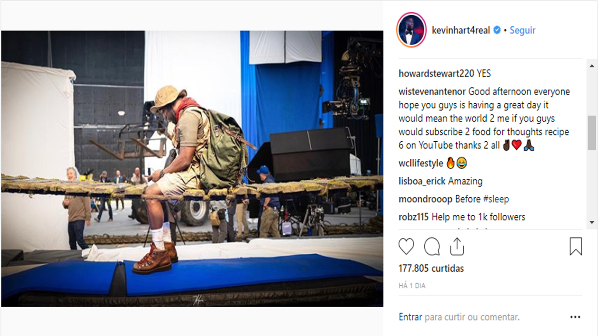

Kevin Hart compartilhou uma nova imagem de bastidores da sequência de Jumanji: Bem-Vindo à Selva, na qual aparece sentado em uma ponte. Confira:
O elenco também contará com nomes como Awkwafina, Danny Glover e Danny DeVito. Jake Kasdan retorna na direção.
A sequência é escrita por Scott Rosenberg e Jeff Pinkner, que trabalharam no roteiro do longa de 2017. A história ainda é um mistério e sabe-se apenas que serão apresentados novos personagens. O lançamento está marcado para 13 de dezembro de 2019.
Bem-Vindo à Selva acompanha quatro jovens que encontram um antigo videogame com o jogo de Jumanji. Ao ligarem e escolherem um personagem, eles são transportados para a floresta. O longa arrecadou US$ 961 milhões mundialmente.